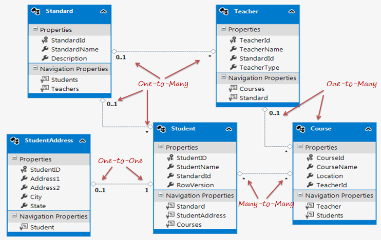

| EF Core Version | Release Date |
|---|---|
| EF Core 2.0 | August 2017 |
| EF Core 1.1 | November 2016 |
| EF Core 1.0 | June 2016 |
EF Core Work with both
1) Code-First (Targeting this)
2) Database-First.
In the code-first approach, EF Core API creates the database and tables using migration based on the conventions and configuration provided in your domain classes.
In the database-first approach, EF Core API creates the domain and context classes based on your existing database using EF Core commands.(But has limited supports).
EF Core doesnot supports
To use EF Core we need to install
1)Database Provider (to access database)
eg.Microsoft.EntityFrameworkCore.SqlServer
Microsoft.EntityFrameworkCore.Relational and System.Data.SqlClient are installed as dependencies automatically
2)EF Core tools
To execute EF Core commands like scaffolding and migration via package manager
Microsoft.EntityFrameworkCore.Tools
===================================================================================
Database First Approach
EF Core doesnot support Visual Designer.
Scaffold-DbContext command is used to create entity and class from existing database

Create this database table first then create this connection as below
Syntax: Scaffold-DbContext [-Connection] [-Provider] [-OutputDir] [-Context] [-Schemas>] [-Tables>] [-DataAnnotations] [-Force] [-Project] [-StartupProject] [<CommonParameters>]
Scaffold-DbContext "Server=.\SQLExpress;Database=SchoolDB;Trusted_Connection=True;" Microsoft.EntityFrameworkCore.SqlServer -OutputDir Models-OutputDirparameter specifies the directory where we want to generate all the classes which is the Models folder in this case.
-Provider parameter here isMicrosoft.EntityFrameworkCore.SqlServer
Scaffold-DbContext command creates entity classes for each table in the SchoolDB database and context class (by deriving DbContext) with Fluent API configurations for all the entities in the Models folder.
using System;
using System.Collections.Generic;
namespace EFCoreTutorials.Models
{
public partial class Student
{
public Student()
{
StudentCourse = new HashSet<StudentCourse>();
}
public int StudentId { get; set; }
public string FirstName { get; set; }
public string LastName { get; set; }
public int? StandardId { get; set; }
public Standard Standard { get; set; } //Student and Standard One to One Relation
public StudentAddress StudentAddress { get; set; } //Student and StudentAddress One to One Relation
public ICollection<StudentCourse> StudentCourse { get; set; } //Student and StudentCourse One to Many Relation
}
}
using System;
using Microsoft.EntityFrameworkCore;
using Microsoft.EntityFrameworkCore.Metadata;
namespace EFCoreTutorials.Models
{
public partial class SchoolDBContext : DbContext
{
public virtual DbSet<Course> Course { get; set; }
public virtual DbSet<Standard> Standard { get; set; }
public virtual DbSet<Student> Student { get; set; }
public virtual DbSet<StudentAddress> StudentAddress { get; set; }
public virtual DbSet<StudentCourse> StudentCourse { get; set; }
public virtual DbSet<Teacher> Teacher { get; set; }
protected override void OnConfiguring(DbContextOptionsBuilder optionsBuilder)
{
if (!optionsBuilder.IsConfigured)
{
#warning To protect potentially sensitive information in your connection string, you should move it out of source code. See http://go.microsoft.com/fwlink/?LinkId=723263 for guidance on storing connection strings.
optionsBuilder.UseSqlServer(@"Server=.\SQLExpress;Database=SchoolDB;Trusted_Connection=True;");
}
}
protected override void OnModelCreating(ModelBuilder modelBuilder)
{
modelBuilder.Entity<Course>(entity =>
{
entity.Property(e => e.CourseName)
.HasMaxLength(50)
.IsUnicode(false);
entity.HasOne(d => d.Teacher)
.WithMany(p => p.Course)
.HasForeignKey(d => d.TeacherId)
.OnDelete(DeleteBehavior.Cascade)
.HasConstraintName("FK_Course_Teacher");
});
modelBuilder.Entity<Standard>(entity =>
{
entity.Property(e => e.Description)
.HasMaxLength(50)
.IsUnicode(false);
entity.Property(e => e.StandardName)
.HasMaxLength(50)
.IsUnicode(false);
});
modelBuilder.Entity<Student>(entity =>
{
entity.Property(e => e.StudentId).HasColumnName("StudentID");
entity.Property(e => e.FirstName)
.HasMaxLength(50)
.IsUnicode(false);
entity.Property(e => e.LastName)
.HasMaxLength(50)
.IsUnicode(false);
entity.HasOne(d => d.Standard)
.WithMany(p => p.Student)
.HasForeignKey(d => d.StandardId)
.OnDelete(DeleteBehavior.Cascade)
.HasConstraintName("FK_Student_Standard");
});
modelBuilder.Entity<StudentAddress>(entity =>
{
entity.HasKey(e => e.StudentId);
entity.Property(e => e.StudentId)
.HasColumnName("StudentID")
.ValueGeneratedNever();
entity.Property(e => e.Address1)
.IsRequired()
.HasMaxLength(50)
.IsUnicode(false);
entity.Property(e => e.Address2)
.HasMaxLength(50)
.IsUnicode(false);
entity.Property(e => e.City)
.IsRequired()
.HasMaxLength(50)
.IsUnicode(false);
entity.Property(e => e.State)
.IsRequired()
.HasMaxLength(50)
.IsUnicode(false);
entity.HasOne(d => d.Student)
.WithOne(p => p.StudentAddress)
.HasForeignKey<StudentAddress>(d => d.StudentId)
.HasConstraintName("FK_StudentAddress_Student");
});
modelBuilder.Entity<StudentCourse>(entity =>
{
entity.HasKey(e => new { e.StudentId, e.CourseId });
entity.HasOne(d => d.Course)
.WithMany(p => p.StudentCourse)
.HasForeignKey(d => d.CourseId)
.OnDelete(DeleteBehavior.ClientSetNull)
.HasConstraintName("FK_StudentCourse_Course");
entity.HasOne(d => d.Student)
.WithMany(p => p.StudentCourse)
.HasForeignKey(d => d.StudentId)
.HasConstraintName("FK_StudentCourse_Student");
});
modelBuilder.Entity<Teacher>(entity =>
{
entity.Property(e => e.StandardId).HasDefaultValueSql("((0))");
entity.Property(e => e.TeacherName)
.HasMaxLength(50)
.IsUnicode(false);
entity.HasOne(d => d.Standard)
.WithMany(p => p.Teacher)
.HasForeignKey(d => d.StandardId)
.OnDelete(DeleteBehavior.Cascade)
.HasConstraintName("FK_Teacher_Standard");
});
}
}
}
Note: EF Core creates entity classes only for tables and not for StoredProcedures or Views.
Then you must create instance of DbContext to represents a session with the database which can be used to query and save instances of your entities to a database. DbContext is a combination of the Unit Of Work and Repository patterns.
public class SchoolContext : DbContext
{
public SchoolContext()
{
}
protected override void OnConfiguring(DbContextOptionsBuilder optionsBuilder)
{
optionsBuilder.UseSqlServer(@"Server=.\SQLEXPRESS;Database=SchoolDB;Trusted_Connection=True;");
}
protected override void OnModelCreating(ModelBuilder modelBuilder)
{
}
//entities
public DbSet<Student> Students { get; set; } //mapped to Student Table
public DbSet<Course> Courses { get; set; } //mapped to Courses Table
}
-->
SchoolContext class is derived from the DbContext class and contains the DbSet<TEntity> properties of Student and Course type. It also overrides the OnConfiguring and OnModelCreating methods. We must create an instance of SchoolContext to connect to the database and save or retrieve Student or Course data.
The OnConfiguring() method allows us to select and configure the data source to be used with a context using DbContextOptionsBuilder.
static void Main(string[] args)
{
using (var context = new SchoolContext()) {
var std = new Student()
{
Name = "Bill"
};
context.Students.Add(std);
context.SaveChanges();
}
}
}
var context = new SchoolContext();
var studentWithGrade = context.Students
.Where(s => s.FirstName == "Bill")
.Include(s => s.Grade)
.FirstOrDefault();
var context = new SchoolContext();
var studentWithGrade = context.Students
.Where(s => s.FirstName == "Bill")
.Include("Grade")
.FirstOrDefault();
SELECT TOP(1) [s].[StudentId], [s].[DoB], [s].[FirstName], [s].[GradeId],[s].[LastName],
[s].[MiddleName], [s.Grade].[GradeId], [s.Grade].[GradeName], [s.Grade].[Section]
FROM [Students] AS [s]
LEFT JOIN [Grades] AS [s.Grade] ON [s].[GradeId] = [s.Grade].[GradeId]
WHERE [s].[FirstName] = N'Bill'
var context = new SchoolContext();
var studentWithGrade = context.Students.Where(s => s.FirstName == "Bill")
.Include(s => s.Grade)
.Include(s => s.StudentCourses)
.FirstOrDefault();
SELECT TOP(1) [s].[StudentId], [s].[DoB], [s].[FirstName], [s].[GradeId], [s].[LastName],
[s].[MiddleName], [s.Grade].[GradeId], [s.Grade].[GradeName], [s.Grade].[Section]
FROM [Students] AS [s]
LEFT JOIN [Grades] AS [s.Grade] ON [s].[GradeId] = [s.Grade].[GradeId]
WHERE [s].[FirstName] = N'Bill'
ORDER BY [s].[StudentId]
Go
SELECT [s.StudentCourses].[StudentId], [s.StudentCourses].[CourseId]
FROM [StudentCourses] AS [s.StudentCourses]
INNER JOIN (
SELECT DISTINCT [t].*
FROM (
SELECT TOP(1) [s0].[StudentId]
FROM [Students] AS [s0]
LEFT JOIN [Grades] AS [s.Grade0] ON [s0].[GradeId] = [s.Grade0].[GradeId]
WHERE [s0].[FirstName] = N'Bill'
ORDER BY [s0].[StudentId]
) AS [t]
) AS [t0] ON [s.StudentCourses].[StudentId] = [t0].[StudentId]
ORDER BY [t0].[StudentId]
Go
====================================================================================================================
var context = new SchoolContext();
var student = context.Students.Where(s => s.FirstName == "Bill")
.Include(s => s.Grade)
.ThenInclude(g => g.Teachers)
.FirstOrDefault();
var context = new SchoolContext();
var stud = context.Students.Where(s => s.FirstName == "Bill")
.Select(s => new
{
Student = s,
Grade = s.Grade,
GradeTeachers = s.Grade.Teachers
})
.FirstOrDefault();
In the above example, .Include(s => s.Grade) will load the Grade reference navigation property of the Student entity. .ThenInclude(g => g.Teachers) will load the Teacher collection property of the Grade entity. The ThenInclude method must be called after the Include method. The above will execute the following SQL queries in the database.
SELECT TOP(1) [s].[StudentId], [s].[DoB], [s].[FirstName], [s].[GradeId], [s].[LastName],
[s].[MiddleName], [s.Grade].[GradeId], [s.Grade].[GradeName], [s.Grade].[Section]
FROM [Students] AS [s]
LEFT JOIN [Grades] AS [s.Grade] ON [s].[GradeId] = [s.Grade].[GradeId]
WHERE [s].[FirstName] = N'Bill'
ORDER BY [s.Grade].[GradeId]
Go
SELECT [s.Grade.Teachers].[TeacherId], [s.Grade.Teachers].[GradeId], [s.Grade.Teachers].[Name]
FROM [Teachers] AS [s.Grade.Teachers]
INNER JOIN (
SELECT DISTINCT [t].*
FROM (
SELECT TOP(1) [s.Grade0].[GradeId]
FROM [Students] AS [s0]
LEFT JOIN [Grades] AS [s.Grade0] ON [s0].[GradeId] = [s.Grade0].[GradeId]
WHERE [s0].[FirstName] = N'Bill'
ORDER BY [s.Grade0].[GradeId]
) AS [t]
) AS [t0] ON [s.Grade.Teachers].[GradeId] = [t0].[GradeId]
ORDER BY [t0].[GradeId]
go
=================================================================================================================================
| C# Data Type | Mapping to SQL Server Data Type |
|---|---|
| int | int |
| string | nvarchar(Max) |
| decimal | decimal(18,2) |
| float | real |
| byte[] | varbinary(Max) |
| datetime | datetime |
| bool | bit |
| byte | tinyint |
| short | smallint |
| long | bigint |
| double | float |
| char | No mapping |
| sbyte | No mapping (throws exception) |
| object | No mapping |